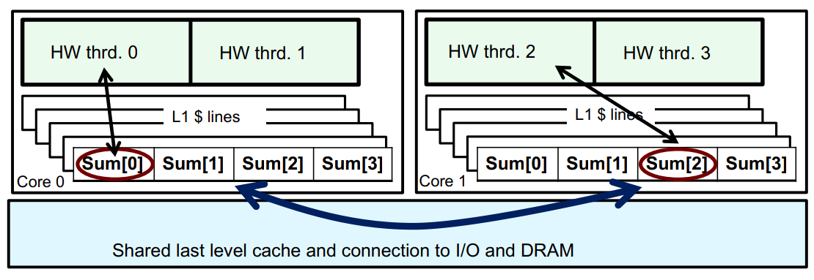

[46]:
def render_c(filename):
from IPython.display import Markdown
with open(filename) as f:
contents = f.read()
return Markdown("```c\n" + contents + "```\n")
20260908-10 OpenMP Intro¶
What is OpenMP?¶

A community-developed standard Application Programming Interface (with “directives”) for
multithreaded programming
vectorization
offload to coprocessors (such as GPUs)
OpenMP is available for C, C++, and Fortran.
Latest version: OpenMP-6.0, released November 2024. Implementations are still incomplete!
Even some 5.0 features still aren’t implemented
OpenMP Resources¶
Tutorials/Learning¶
Tim Mattson: The OpenMP Common Core from ATPESC (video)
Took a one-day tutorial from him at ATPESC, really great material
Tim helped make the OpenMP standard, though he is retired from Intel now
Reference Material¶
-
Also has the most useful MPI documentation out there
OpenMP-5.0 Reference Cards (a few pages, printable)
#pragma omp parallel¶
The standard is big, but most applications only use a few constructs.
Tim Mattson identifies 21 as the “common core”
[2]:
render_c('omp-hello.c')
[2]:
#include <omp.h>
#include <stdio.h>
int main() {
#pragma omp parallel
{
int num_threads = omp_get_num_threads();
int my_thread_num = omp_get_thread_num();
printf("I am %d of %d\n", my_thread_num, num_threads);
}
return 0;
}
[2]:
render_c('omp-hello.c')
[2]:
#include <omp.h>
#include <stdio.h>
int main() {
#pragma omp parallel
{
int num_threads = omp_get_num_threads();
int my_thread_num = omp_get_thread_num();
printf("I am %d of %d\n", my_thread_num, num_threads);
}
return 0;
}
[45]:
!make CFLAGS='-fopenmp -Wall' -B omp-hello
cc -fopenmp -Wall omp-hello.c -o omp-hello
[102]:
!OMP_NUM_THREADS=8 ./omp-hello
I am 7 of 8
I am 4 of 8
I am 5 of 8
I am 6 of 8
I am 2 of 8
I am 1 of 8
I am 3 of 8
I am 0 of 8
Parallelizing triad¶
void triad(int N, double *a, const double *b, double scalar, const double *c) {
#pragma omp parallel
{
for (int i=0; i<N; i++)
a[i] = b[i] + scalar * c[i];
}
}
What does this code do?
Need to actually tell each thread what to do.
This goes under Single Program Multiple Data (SPMD) paradigm
As compared to SIMD
Each thread runs the exact same code
We need a way for each thread to differentiate itself
And from that differentiation, we can split the work amongst the threads
void triad(int N, double *a, const double *b, double scalar, const double *c) {
#pragma omp parallel
{
int id = omp_get_thread_num();
int num_threads = omp_get_num_threads();
for (int i=id; i<N; i+=num_threads)
a[i] = b[i] + scalar * c[i];
}
}
False Sharing¶
Cache Coherency¶
There are only two hard things in Computer Science: cache invalidation and naming things.
—Phil Karlton
The von Neumann model (effectively) specifies that
There is one single pool of memory
All processes have access to that exact same pool of memory
In reality, CPUs use caches to store data closer to the processing units
Data is stored in multiple locations
There is no longer a single “source of truth” for what a data value should be
By the “von Neumann contract”, accessing data in memory should be as if it is also stored in a single memory pool
If a process modifies data in it’s L1 cache, the data in L2, L3, and memory are incorrect!
Not a big problem for serial programs; the data is only stored in one L1 cache, so there’s no risk of incoherence
Bigger issue for parallel programs with shared memory (e.g. threads)
{kind=link}
Rather than communicate individual values, the CPU operates on cachelines
So updating the L1 cache in a different process requires communicating the entire cache line
And determining whether the data has changed is done on a cacheline basis
False Sharing example¶
Take a reduction operation:
#define NUM_THREADS 4
double sums[NUM_THREADS];
omp_set_num_threads(NUM_THREADS);
#pragma omp parallel
{
int id = omp_get_thread_num();
for (int i=id; i<N; i+=num_threads) {
sums[id] += i;
}
}

image from Tim Mattson’s notes here
Memory system operates on cache lines
When one process writes to it’s
sumsvalue, the entire cache line has to be corrected
Everytime a
sumsvalue is written, the entire cache line has to be communicated across to the other cachesEach thread, when wanting to use it’s own
sumsentry, has to wait to recieve the updated cacheline from the other threads
False sharing solution¶
Pad the array so that the entries fall outside of the cacheline
Use the
`alignas<https://en.cppreference.com/c/language/_Alignas>`__ type specifier
Some modern processors have ways of avoiding these issues and false sharing isn’t actually an issue.
Parallelizing dot¶
Reference¶
double dot_ref(size_t n, const double *a, const double *b) {
double sum = 0;
for (size_t i=0; i<n; i++)
sum += a[i] * b[i];
return sum;
}
Opt 1 - Striding over data¶
#define NUM_THREADS 4
double dot_opt1(size_t n, const double *a, const double *b) {
double sums[NUM_THREADS] = {};
omp_set_num_threads(NUM_THREADS);
#pragma omp parallel
{
int id = omp_get_thread_num();
for (size_t i=id; i<n; i+=NUM_THREADS)
sums[id] += a[i] * b[i];
}
for (size_t j=1; j<NUM_THREADS; j++) sums[0] += sums[j];
return sums[0][0];
}
Need to give every thread it’s own sum entry to add into
Collect each threads result at the end
Obviously runs into false sharing, so we could use padding to address this
Each thread is striding over data, probably not ideal!
Not a big concern for global memory bandwidth (the data in each fetched cache line is still used, just by different threads)
Opt 2 - Divide data in the loop between each thread¶
#define NUM_THREADS 4
#define PAD 8
double dot_opt2(size_t n, const double *a, const double *b) {
double sums[NUM_THREADS][PAD] = {};
omp_set_num_threads(NUM_THREADS);
#pragma omp parallel
{
int id = omp_get_thread_num();
int num_threads = omp_get_num_threads();
// Divide work between each thread
int start = id * n / num_threads;
int end = (id+1) * (n / num_threads);
if (id == num_threads - 1)end = n;
for(size_t i = start; i < end; i++)
sums[id][0] += a[i] * b[i];
}
for (size_t j=1; j<NUM_THREADS; j++) sums[0][0] += sums[j][0];
return sums[0][0];
}
No more striding!
Really annoying to have to compute these bounds ourselves
Surely there’s a better way…
omp pragma for¶
We can just tell OpenMP “Hey, here’s a bunch of independent work in the form of a loop. Distribute it amongst threads”
double dot_opt3(size_t n, const double *a, const double *b) {
double sums[4] = {};
omp_set_num_threads(4);
#pragma omp parallel
{
int id = omp_get_thread_num();
#pragma omp for
for (size_t i=0; i<n; i++)
sums[id] += a[i] * b[i];
}
for (size_t j=1; j<4; j++) sums[0] += sums[j];
return sums[0];
}
This is technically no longer SPMD. Each thread has it’s own OpenMP-designated code that it will run. Not a problem, but something of note.
Cool, but how do we distribute it amongst threads?
The interleaving before distributed work amongst the threads
Scheduling¶
OpenMP offers different options for how to schedule the work across threads
Work divided into chunks
Each chunk is a contiguous non-empty subset of the loop iterations
We can specify the chunk_size
Those chunks are distributed to the threads via different kinds of schedules
staticdynamicguidedautoruntime
Static Scheduling¶
Each thread gets chunk of specific size
All iteratations are handed out
Completely deterministic algorithm
NO communication or synchronization is necessary to spread out the work
Row is thread ID
Column is which loop iteration was assigned
It is not time
Slightly modified from this blog post
schedule(static, 1):
0123456789 0123456789 0123456789 0123
0123456789 0123456789 0123456789
Thread 0: * * * * * * * * * * * * * * * *
Thread 1: * * * * * * * * * * * * * * * *
Thread 2: * * * * * * * * * * * * * * * *
Thread 3: * * * * * * * * * * * * * * * *
schedule(static, 4):
0123456789 0123456789 0123456789 0123
0123456789 0123456789 0123456789
Thread 0: **** **** **** ****
Thread 1: **** **** **** ****
Thread 2: **** **** **** ****
Thread 3: **** **** **** ****
schedule(static, 8):
0123456789 0123456789 0123456789 0123
0123456789 0123456789 0123456789
Thread 0: ******** ********
Thread 1: ******** ********
Thread 2: ******** ********
Thread 3: ******** ********
Static Pros:
Dead simple
No overhead when assigning work
Static Cons:
If work per iteration varies, work is not spread evenly
e.g. no load balancing
Chunk size¶
For static scheduling, how does chunk size impact execution?
Vectorization
If the memory being operated on is contiguous and chunk size is smaller than the vector width, then the code won’t be vectorized
Cache locality
Keeping each thread using data that is aligned in cache lines reduces contention
Dynamic Scheduling¶
Chunks are placed in a queue
Threads then pop them chunks off the queue
When a thread is done with it’s chunk, it goes back to the queue
Increasing chunk size makes scheduling more static, but less load balancing potential
schedule(dynamic, 1):
0123456789 0123456789 0123456789 0123
0123456789 0123456789 0123456789
Thread 0: * * * * * * * * * * * * * * *
Thread 1: * * * * * * * * * * * * * ** ** * ** ** *
Thread 2: * * * * * * * * * * *
Thread 3: * * * * * * * * * * * * * * *
schedule(dynamic, 4):
0123456789 0123456789 0123456789 0123
0123456789 0123456789 0123456789
Thread 0: **** **** **** **** ****
Thread 1: **** **** **** ****
Thread 2: **** **** ****
Thread 3: **** **** **** ****
schedule(dynamic, 8):
0123456789 0123456789 0123456789 0123
0123456789 0123456789 0123456789
Thread 0: ******** ************************
Thread 1: ******** ********
Thread 2: ********
Thread 3: ********
Dynamic Pros:
Flexible scheduling
Helps ensure that all threads are actively working on something
e.g. load balancing
Dynamic Cons:
Maintaining queue requires overhead
Queue must be synchronized between all threads
Synchronization can be slow
Thread is waiting until it can get work off of the queue
Guided Scheduling¶
Same as dynamic, but the chunk size is dynamic, starting at large sizes and decreasing as iterations reduce
Smallest chunk size controlled by the user
Large chunk sizes == less time interacting with queue
Theoretically, less could be more efficient than dynamic
More expensive per queue-visit than dynamic
Each queue visit, the handler must compute what the next chunk size should be
schedule(guided, 2):
0123456789 0123456789 0123456789 0123
0123456789 0123456789 0123456789
Thread 0: ************ **** ** **
Thread 1: **************** *****
Thread 2: ******* **
Thread 3: ********* *** **
schedule(guided, 4):
0123456789 0123456789 0123456789 0123
0123456789 0123456789 0123456789
Thread 0: ********* *****
Thread 1: ******* **** ***
Thread 2: **************** ****
Thread 3: ************ ****
schedule(guided, 8):
0123456789 0123456789 0123456789 0123
0123456789 0123456789 0123456789
Thread 0: ************ ********
Thread 1: ********* ********
Thread 2: ********
Thread 3: **************** ***
Guided Pros:
Does load balancing
Attempts to reduce the number of queue visits
Guided Cons:
Extra overhead compared to dynamic
Mitigated if the work-per iteration is larger than the extra overhead
Scheduling and Chunk Size Analogy¶
By analogy, say you want to fill a box with rocks, with the goal being to fill the volume of the box with as much rock as possible. Any air in the box in considered “wasted space”. Rocks can be of different sizes and different shapes, so that impacts the strategy you might use to fill the box.
First, we can divide the rocks into either square shape, or irregular shapes. Square shapes are easy to pack optimally by using a pre-determined packing order. Conversely, irregular shapes require extra thought and attention to get the best packing. It’s best in this case to place one rock at a time, re-evaluating where the next rock goes each time.
Second, we can divide the rocks into different sizes. Small rocks will more easily pack into the box and leave less space. Large rocks will are easier to work with (we fill a lot of volume while only moving a single rock), but are more likely to leave large air gaps if we’re not careful.
Rock Analogy |
Scheduling Analogy |
|---|---|
Rocks |
Iteration chunks, useful work |
Air gaps |
Threads waiting, no useful work done |
Square rocks |
Consistent work per iteration |
Irregular rocks |
Inconsistent work per iteration |
Size of rocks |
Chunk size |
Packing order/strategy |
Thread scheduling |
Pre-determined packing |
|
Static scheduling work best with consistent work-per-iteration
Square rocks are more ameanable to a pre-determined packing order
Using a pre-determined packing order for irregular rocks will certainly lead to unnecessary air gaps
Dynamic scheduling is good for inconsistent work-per-iteration
With irregular rock shapes, you want to go one step at a time placing each rock to help ensure there’s fewer gaps
Guided scheduling attempts to balance efficiency and optimality with it’s scheduling
Starting with larger rocks means we have less total rocks to move (and less descisions to make each time)
However, if the rocks are really irregular, better packing could be achieved by breaking up the large rock into smaller ones instead
Smaller chunk size means more flexibility with work distribution
Smaller rocks can more easily fill the air gaps in the box
Larger chunk sizes are easier to work with
We only have to move one rock for a significant volume of the box to be filled
Each rock moved is simply easier to work with
Scheduling Summary¶
Schedule Kind |
Description |
Best for … |
|---|---|---|
|
Chunks are assigned to each thread round-robin style |
Consistent work per iteration |
|
Chunks are placed in a queue. When a thread is done with it’s chunk, it pops a chunk off the queue |
Small, inconsistent work per iteration |
|
Threads grab block of iterations. The size of the block starts large and shrinks down to size “chunk” as the calculation proceeds. |
Large inconsistent work per iteration |
|
Set via |
Experimenting! |
|
Schedule is left up the implementation (can be whatever it once, not necessarily one of the above) |
Don’t guess, just measure! Benchmark your code to determine which schedule is best rather than what you think is best. Sometimes it’s obvious (mostly for using static), but othertimes not.
omp for for the dot function¶
double dot_opt3(size_t n, const double *a, const double *b) {
double sums[4] = {};
omp_set_num_threads(4);
#pragma omp parallel
{
int id = omp_get_thread_num();
#pragma omp for
for (size_t i=0; i<n; i++)
sums[id] += a[i] * b[i];
}
for (size_t j=1; j<4; j++) sums[0] += sums[j];
return sums[0];
}
What schedule do you think we should use?
Probably static scheduling.
The work per iteration is fixed at 2 FLOPs
The memory access patterns aren’t complex or random either